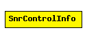

File: NetworkInterfaces/MFCore/SnrControlInfo.msg
C++ definition: click here
Control Info class that is used to send SNR information from snrEval to decider
This class is used by the snrEval to send SNR information to the decider. After recieving a packet from the channel the snrEval calculates SNR information, writes this into the SnrControlInfo and attaches the ControlInfo to the Airframe.
This control info can be used for complex information, i.e. different SNR levels over the transmission time of this packet. The parameter snrList is a dynamic list (see http://www.sgi.com/tech/stl/List.html). The list entries are defined by the struct SnrListEntry, which only contains two parameters of type double, time and SNR. These values are a certain SNR level and the time at which this SNR level started. The thing is that you can't manipulate the list directly in the class. Instead you have to create your own list with 'SnrList listName;'. Furthermore you have to create a new object of the struct SnrListEntry everytime you add something to the list.
So, every list entry should look something like this:
SnrListEntry listEntry;
listEntry.time = snrStartingTime;
listEntry.snr = snrLevel;
listName.push_back( listEntry );
When the list is complete and you want to send the message, you have to give the list to the control info before attaching it to the AirFrame.
SnrControlInfo* cInfo = new SnrControlInfo;
cInfo->setSnrList( listName );
msg->setControlInfo( cInfo );
When receiving an AirFrame (in the deceider module) you probably want to read the list. Therefore you have to get a copy of that list:
SnrControlInfo* cInfo = new SnrControlInfo;
cInfo = static_cast<SnrControlInfo*>(msg->removeControlInfo());
SnrList receivedList* = new SnrList;
receivedList = cInfo->getSnrList();
delete cInfo;
This component has been taken over from Mobility Framework 1.0a5.
Author: Marc Loebbers
The following diagram shows part of the inheritance hierarchy. Unresolved types are missing from the diagram. Click here to see the full picture.
| Name | Type | Description |
|---|---|---|
| snrList | SnrList |
class SnrControlInfo { fields: SnrList snrList; };